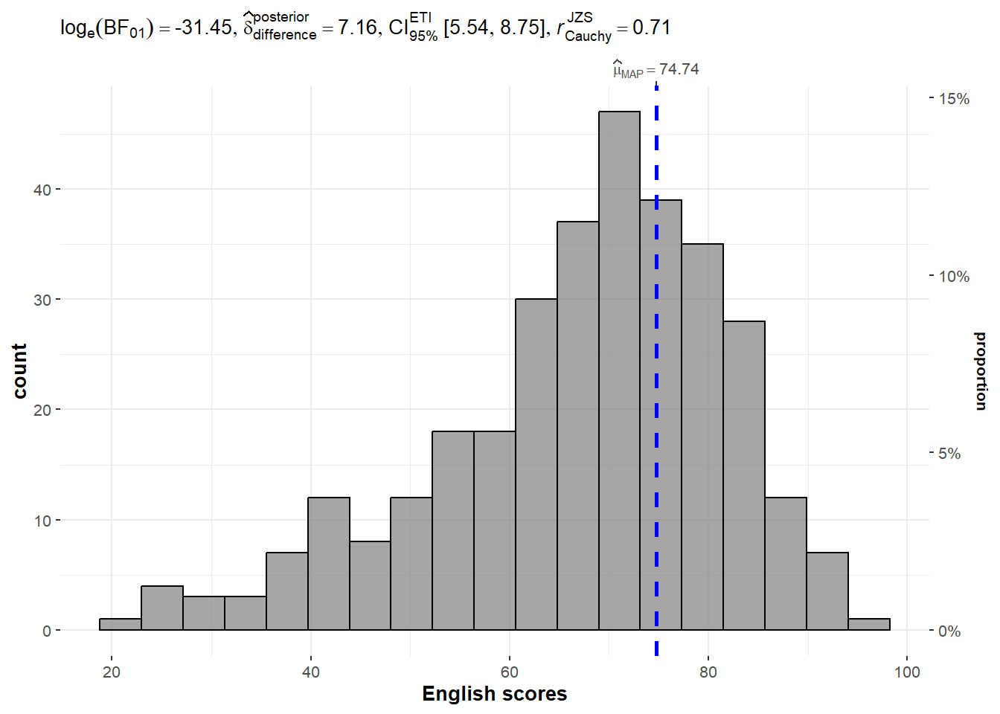
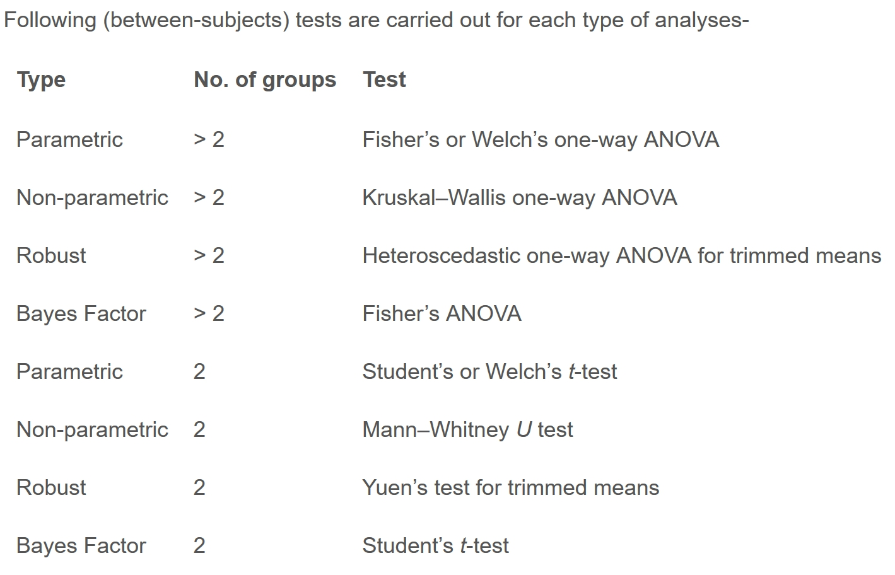
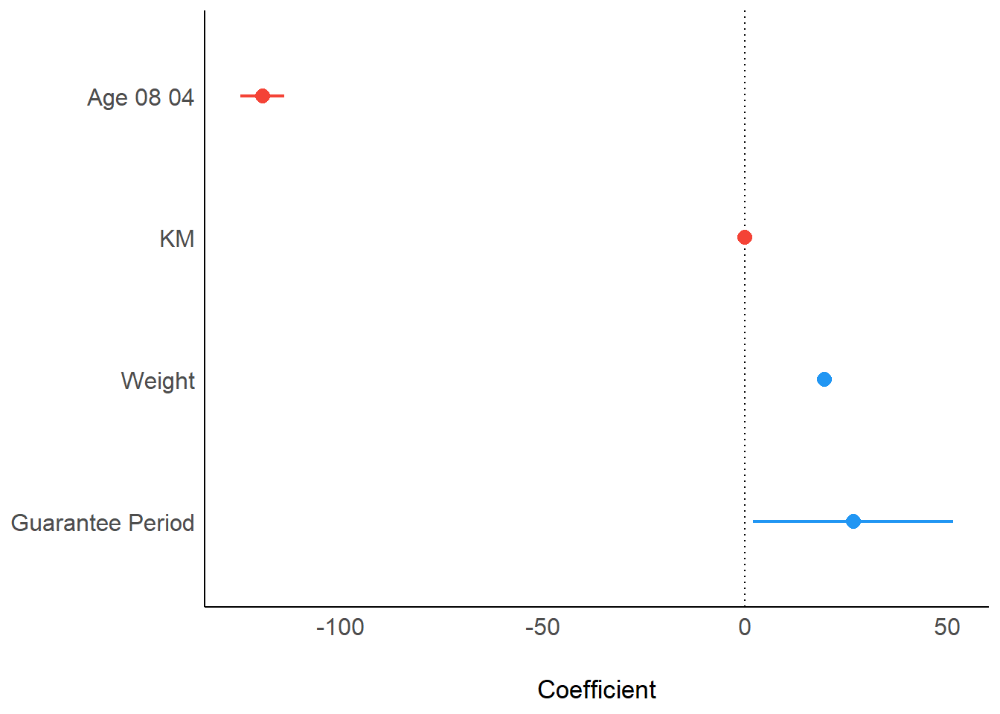

pacman::p_load(ggstatsplot, tidyverse)Hands-on Exercise 04-2: Visual Statistical Analysis
1. Learning Outcome
In this hands-on exercise, you will gain hands-on experience on using:
ggstatsplot package to create visual graphics with rich statistical information,
performance package to visualise model diagnostics, and
parameters package to visualise model parameters
2. Visual Statistical Analysis with ggstatsplot
ggstatsplot  is an extension of ggplot2 package for creating graphics with details from statistical tests included in the information-rich plots themselves.
is an extension of ggplot2 package for creating graphics with details from statistical tests included in the information-rich plots themselves.
For all statistical tests reported in the plots, the default template abides by the [APA](https://my.ilstu.edu/~jhkahn/apastats.html) gold standard for statistical reporting. For example, here are results from a robust t-test:

3. Getting Started
In this exercise, ggstatsplot and tidyverse will be used.
Exam_data <- read_csv("C:/Trista0114/ISSS608/hands-onEx/hands-onEx01/Exam_data.csv")The detail of attribute description is also show in the previous exercise.
Exam_data# A tibble: 322 × 7
ID CLASS GENDER RACE ENGLISH MATHS SCIENCE
<chr> <chr> <chr> <chr> <dbl> <dbl> <dbl>
1 Student321 3I Male Malay 21 9 15
2 Student305 3I Female Malay 24 22 16
3 Student289 3H Male Chinese 26 16 16
4 Student227 3F Male Chinese 27 77 31
5 Student318 3I Male Malay 27 11 25
6 Student306 3I Female Malay 31 16 16
7 Student313 3I Male Chinese 31 21 25
8 Student316 3I Male Malay 31 18 27
9 Student312 3I Male Malay 33 19 15
10 Student297 3H Male Indian 34 49 37
# ℹ 312 more rows4. Stat test by using ggstatsplot
4.1 One-sample test
gghistostats() is used to to build an visual of one-sample test on English scores.
Performs a Bayesian one-sample test to see if the mean differs from 60, and displays the test results and other statistical information on the chart.
set.seed(1234)
gghistostats(
data = Exam_data,
x = ENGLISH,
type = "bayes",
test.value = 60,
xlab = "English scores"
)
4.2 Bayes Factor
A Bayes factor is the ratio of the likelihood of one particular hypothesis to the likelihood of another. It can be interpreted as a measure of the strength of evidence in favor of one theory among two competing theories.
That’s because the Bayes factor gives us a way to evaluate the data in favor of a null hypothesis, and to use external information to do so. It tells us what the weight of the evidence is in favor of a given hypothesis.
When we are comparing two hypotheses, H1 (the alternate hypothesis) and H0 (the null hypothesis), the Bayes Factor is often written as B10. It can be defined mathematically as
The Schwarz criterion is one of the easiest ways to calculate rough approximation of the Bayes Factor.
A Bayes Factor can be any positive number. One of the most common interpretations is this one—first proposed by Harold Jeffereys (1961) and slightly modified by Lee and Wagenmakers in 2013:

4.3 Two-sample mean test: ggbetweenstats()
ggbetweenstats() is used to build a visual for two-sample mean test of Maths scores by gender.
ggbetweenstats(
data = Exam_data,
x = GENDER,
y = MATHS,
type = "np",#a nonparametric test should be used.
messages = FALSE
)Default information: - statistical details - Bayes Factor - sample sizes - distribution summary
4.4 Oneway ANOVA Test: ggbetweenstats()
ggbetweenstats() is used to build a visual for One-way ANOVA test on English score by race.
pairwise.display = "s"
- “ns” → only non-significant
- “s” → only significant
- “all” → everything
p.adjust.method = "fdr"
- Sets the method to adjust p-values in multiple comparisons to “FDR” (False Discovery Rate), helping control for multiple testing errors.
ggbetweenstats(
data = Exam_data,
x = RACE,
y = ENGLISH,
type = "p", #parametric test
mean.ci = TRUE,
pairwise.comparisons = TRUE, # additional pairwise tests (e.g., pairwise t-tests) between each pair of groups
pairwise.display = "s",
p.adjust.method = "fdr",
messages = FALSE
)4.5 ggbetweenstats - Summary of tests


Generally, when the data conforms to the normal distribution, use the parametric test; when the data is obviously skewed, choose the non-parametric or robust test.
4.6 Significant Test of Correlation: ggscatterstats()
ggscatterstats() is used to build a visual for Significant Test of Correlation between Maths scores and English scores.
- There is a high positive correlation (r = 0.83) between mathematics scores and English scores, and the statistical significance is extremely strong ( ùëù ‚â™ 0.05 p‚â™0.05).
- Improvements in math scores are often accompanied by improvements in English scores.
ggscatterstats(
data = Exam_data,
x = MATHS,
y = ENGLISH,
marginal = FALSE,
)
4.7 Significant Test of Association (Depedence) : ggbarstats()
Maths scores is binned into a 4-class variable by using cut(). ggbarstats() is used to build a visual for Significant Test of Association.
- There is no significant relationship between individuality and the distribution of mathematics scores (p = 0.79, Cramér’s V ≈ 0).
- The proportions of girls and boys in each performance range are similar, indicating that the correlation between mathematics performance and gender is low in this data set.
exam1 <- Exam_data %>%
mutate(MATHS_bins =
cut(MATHS,
breaks = c(0,60,75,85,100))
)
ggbarstats(exam1,
x = MATHS_bins,
y = GENDER)
5. Visualising Models
In this section, you will learn how to visualise model diagnostic and model parameters by using parameters package.
- Toyota Corolla case study will be used. The purpose of study is to build a model to discover factors affecting prices of used-cars by taking into consideration a set of explanatory variables.
5.1 Getting Started
pacman::p_load(readxl, performance, parameters, see)Notice that the output object car_resale is a tibble data frame.
car_resale <- read_xls("C:/Trista0114/ISSS608/hands-onEx/hands-onEx04-2/ToyotaCorolla.xls",
"data")
car_resale# A tibble: 1,436 × 38
Id Model Price Age_08_04 Mfg_Month Mfg_Year KM Quarterly_Tax Weight
<dbl> <chr> <dbl> <dbl> <dbl> <dbl> <dbl> <dbl> <dbl>
1 81 TOYOTA … 18950 25 8 2002 20019 100 1180
2 1 TOYOTA … 13500 23 10 2002 46986 210 1165
3 2 TOYOTA … 13750 23 10 2002 72937 210 1165
4 3 TOYOTA… 13950 24 9 2002 41711 210 1165
5 4 TOYOTA … 14950 26 7 2002 48000 210 1165
6 5 TOYOTA … 13750 30 3 2002 38500 210 1170
7 6 TOYOTA … 12950 32 1 2002 61000 210 1170
8 7 TOYOTA… 16900 27 6 2002 94612 210 1245
9 8 TOYOTA … 18600 30 3 2002 75889 210 1245
10 44 TOYOTA … 16950 27 6 2002 110404 234 1255
# ℹ 1,426 more rows
# ℹ 29 more variables: Guarantee_Period <dbl>, HP_Bin <chr>, CC_bin <chr>,
# Doors <dbl>, Gears <dbl>, Cylinders <dbl>, Fuel_Type <chr>, Color <chr>,
# Met_Color <dbl>, Automatic <dbl>, Mfr_Guarantee <dbl>,
# BOVAG_Guarantee <dbl>, ABS <dbl>, Airbag_1 <dbl>, Airbag_2 <dbl>,
# Airco <dbl>, Automatic_airco <dbl>, Boardcomputer <dbl>, CD_Player <dbl>,
# Central_Lock <dbl>, Powered_Windows <dbl>, Power_Steering <dbl>, …5.2 Multiple Regression Model: lm()
The code chunk below is used to calibrate a multiple linear regression model by using lm() to find the factors that influences the Price.
model <- lm(Price ~ Age_08_04 + Mfg_Year + KM +
Weight + Guarantee_Period, data = car_resale)
model
Call:
lm(formula = Price ~ Age_08_04 + Mfg_Year + KM + Weight + Guarantee_Period,
data = car_resale)
Coefficients:
(Intercept) Age_08_04 Mfg_Year KM
-2.637e+06 -1.409e+01 1.315e+03 -2.323e-02
Weight Guarantee_Period
1.903e+01 2.770e+01 ✅ There is a negative correlation between vehicle age (Age_08_04) and mileage (KM). The older the vehicle and the more it is driven, the lower the price.
✅ Manufacturing year (Mfg_Year), weight (Weight) and warranty period (Guarantee_Period) are positively correlated. The newer, heavier the car, the longer the warranty period, the higher the price.
5.3 Model Diagnostic: checking for multicolinearity
check_collinearity()
Multicollinearity occurs when two or more independent variables in a regression model are highly correlated, leading to instability in coefficient estimates and reducing interpretability.
Note
VIF (Variance Inflation Factor): Measures how much the variance of a coefficient is inflated due to multicollinearity.
VIF < 5 → Low or acceptable correlation.
VIF > 10 → Severe multicollinearity (problematic).
VIF > 30 → Extremely high multicollinearity (must be addressed).
check_collinearity(model)# Check for Multicollinearity
Low Correlation
Term VIF VIF 95% CI Increased SE Tolerance Tolerance 95% CI
KM 1.46 [ 1.37, 1.57] 1.21 0.68 [0.64, 0.73]
Weight 1.41 [ 1.32, 1.51] 1.19 0.71 [0.66, 0.76]
Guarantee_Period 1.04 [ 1.01, 1.17] 1.02 0.97 [0.86, 0.99]
High Correlation
Term VIF VIF 95% CI Increased SE Tolerance Tolerance 95% CI
Age_08_04 31.07 [28.08, 34.38] 5.57 0.03 [0.03, 0.04]
Mfg_Year 31.16 [28.16, 34.48] 5.58 0.03 [0.03, 0.04]check_c <- check_collinearity(model)
plot(check_c)
Please remove one variable to eliminate redundancy.
5.4 Model Diagnostic: checking normality assumption
check_normality()
The Q-Q plot compares the distribution of residuals against a theoretical normal distribution. If residuals are normally distributed, the points should fall along the diagonal line.
model1 <- lm(Price ~ Age_08_04 + KM +
Weight + Guarantee_Period, data = car_resale)check_n <- check_normality(model1)plot(check_n)
Note
What impact will have on regression models?
If the residuals do not comply with normality, it may affect the accuracy of the p-value and confidence interval, making the hypothesis testing results unreliable. If the number of samples is n > 30, the regression results may still be valid according to the central limit theorem (CLT), but further checking is recommended.
5.5 Model Diagnostic: Check model for homogeneity of variances
check_heteroscedasticity()
The residuals should be randomly scattered around 0 with no clear pattern.
Current plot observations:
Residuals increase in spread as fitted values increase.
The green trend line curves upward.
This suggests heteroscedasticity (non-constant variance).
check_h <- check_heteroscedasticity(model1)
plot(check_h)
Note
Solution:
Variable transformation: taking the log of the price (log transformation)
When the variation increases with the predicted value, it usually means that the data has a “multiplicative effect”. You can try log transformation Price to stabilize the variation.
5.6 Model Diagnostic: Complete check
check_model
check_model(model1)5.7 Visualising Regression Parameters: see methods
Red Points: Negative coefficients (negative impact on Price).
Blue Points: Positive coefficients (positive impact on Price).
plot(parameters(model1))
The confidence interval of
KMmight overlap with zero.The negative effect of
Age_08_04makes sense, but it could be correlated withMfg_Year(previously identified multicollinearity issue).If a variable’s confidence interval crosses zero, it might be redundant and could be removed from the model.
5.8 Visualising Regression Parameters: ggcoefstats()
ggcoefstats()
ggcoefstats(model1,
output = "plot")
Note
AIC & BIC
- AIC = 24,915, BIC = 24,946
- Lower values indicate a better model fit while penalizing complexity.
- These can be compared with alternative models to determine which regression model performs best.
| Coefficient (β) | t-value | p-value | Significance | |
|---|---|---|---|---|
| Guarantee_Period | 26.82 | 2.13 | 0.03 | ✅ Significant (p < 0.05 |
| Weight | 19.72 | 25.53 | 8.74e-104 | ✅ Highly significant |
| KM (Mileage) | -0.02 | -20.04 | 5.98e-79 | ✅ Highly significant |
| Age_08_04 (Car Age) | -119.49 | -43.29 | 2.10e-262 | ✅ Highly significant |
5.9 Conclusion
Why is the p-value of KM less than 0.05?
In the graph (the result of 5.8 ggcoefstats()), the variable KM has a p-value of 5.98e-79 (very small), which means that it is statistically significant for Price. However, in the previous plot (5.7 plot(parameters(model1))), the coefficient plot for KM looks close to 0, which can lead to confusion.
Possible Reasons
- Small coefficient but low variability can lead to a very small p-value
- If the variability of
KMin the dataset is low (i.e., most values are concentrated in a narrow range), statistical tests may still detectKMas a stable and significant predictor, leading to a very small p-value. - This suggests that mileage has a consistent effect on price, but the effect size is small.
- If the variability of
- Effect of Variable Units
KMis likely measured in kilometers, and its values may be large (e.g., 10,000+ km).- For example, if a car has 100,000 km, the impact on price would be: 100,000×(−0.02)=−2,000100,000 (-0.02) = -2,000100,000×(−0.02)=−2,000
- This means driving an extra 100,000 km could reduce the price by 2,000, which is practically significant.
- Large Sample Size
- If the dataset contains a large number of observations (n is large), even tiny effects can be detected as statistically significant.
Important
KM has a very small p-value (statistically significant), but this does not necessarily mean it has a large impact on Price. Practical interpretation is essential rather than relying solely on p-values.
5.10 Reference
Part of the content of this pages were generated by ChatGPT and Kam, T.S. (2023). Visual Statistical Analysis.